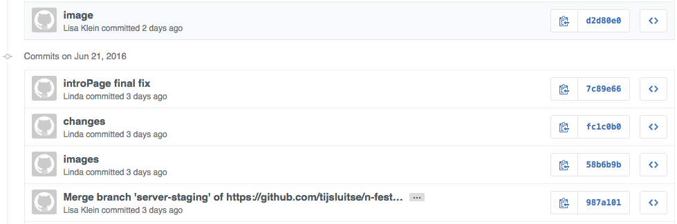

Geschreven door Linda van Dijk Op 24 juni 2016
Als je in een develop team werkt ontkom je er niet aan een tool als Github te gebruiken. Github is een sociaal platform voor open-source projecten. Het is voornamelijk bedoeld om makkelijk code te delen en samen te werken aan projecten.
Tijdens mijn laatste project van mijn minor Everything Web heb ik echt kennis gemaakt met het samenwerken op Github. Tijdens het project moest ik nauw samenwerken met twee mede studenten aan één applicatie. In het begin was het erg lastig om ervoor te zorgen dat er geen merge conflicten ontstonden en dat wij elkaar niet overschreven. Nadat de tijd zich vorderde ging het steeds beter en hadden wij bijna geen last meer van merge conflicten en werkten Gihub eigenlijk heel erg fijn.
Wat belangrijk is als je begint aan een project op Github is een Staging branch aanmaken waar niemand direct in werkt maar wel zijn pull-requesten naar toe kan mergen. Vervolgens maakt iedereen een sub-branch aan waar hij in gaat werken. Zorg er wel voor dat iedereen zo min mogelijk in dezelfde bestanden gaat werken om merge conflicten te voorkomen. Zodra iemand een een feature af heeft, kan hij zijn branch mergen met de Staging branch. Soms is het raadzaam tussentijdig ook code te mergen als het gaat om een hele grote feature. Hoe langer je wacht met mergen, hoe meer kans op merge conflicten. Tijdens mijn project probeerde we minimaal aan het einde van de dag ervoor de zorgen dat iedereen up-to-date was van alle features waar iedereen aan gewerkt had.
Als je begint aan een nieuw project is het aan te raden om samen te werken op dezelfde locatie. De kans is namelijk groter om merge conflicten te krijgen doordat het project nog niet zo uitgebreid is waardoor de kans groter is dat er meerdere mensen is hetzelfde bestand hebben gewerkt. Als er een merge conflict is ontstaan, moet je deze zelf oplossen door in je editor te kijken naar welke code nieuwer is en dus behouden moet worden. Als je op dat moment niet samen met je teamgenoot bent is het nogal lastig om te bepalen wat wel en niet bewaard moet blijven. Een merge conflict kan er zo uit zien:
section {
margin: 5em 1em;
max-width: 40em;
width: 90%;
font-size: 1em;
color: #333333;
}
<<<<<<< HEAD
section {
max-width: 40em;
width: 90%;
font-size: 1em;
color: #333333;
}
=======
Wat voor mijn project ook erg voordelig was aan Github, was dat er precies te zien is wie wat heeft gecommit. Het was van belang dat ik aan het einde van het project kon laten zien wat mijn bijdrage was aan de applicatie. Er is te zien hoeveel commits er gedaan zijn en als je daarop klikt krijg je een hele tijdlijn te zien wie wat wanneer gedaan heeft.
Ik vind zelf de Github Desktop erg prettig werken omdat je een visueel overzicht hebt. Het nadeel van de Github Desktop is dat als er merge conflicten ontstaan kunnen deze alleen met de terminal worden opgelost. Maar verder kun je alles met de Github Desktop:
Als ik in het vervolg een project ga doen met meerdere developers, dan gaat mijn keuze zeker uit naar het gebruiken van Gihub als tool. Als je er nog nooit mee gewerkt hebt is het in eerste instantie erg onduidelijk hoe Github in elkaar steekt. Maar het is een kwestie van gewoon doen en erachter komen hoe alles werkt. Deze tool maakt het mogelijk om met collega’s over de hele wereld samen te werken.